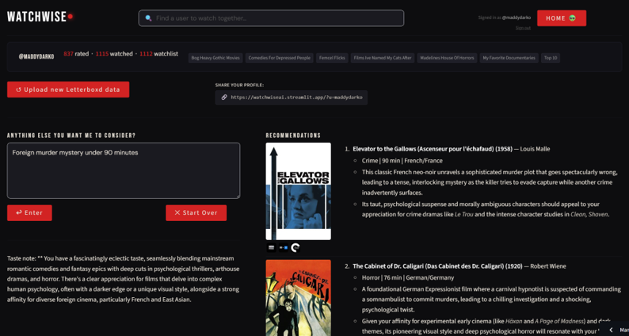
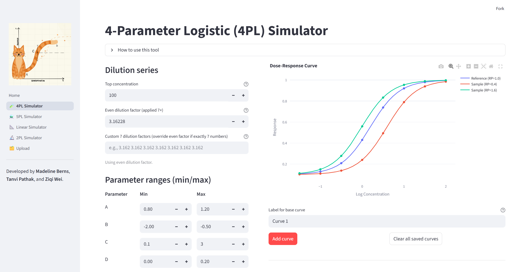
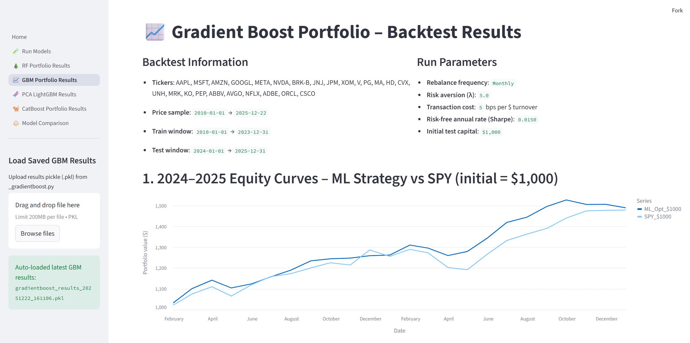
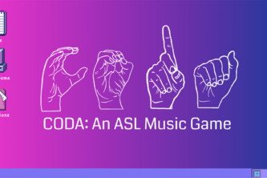
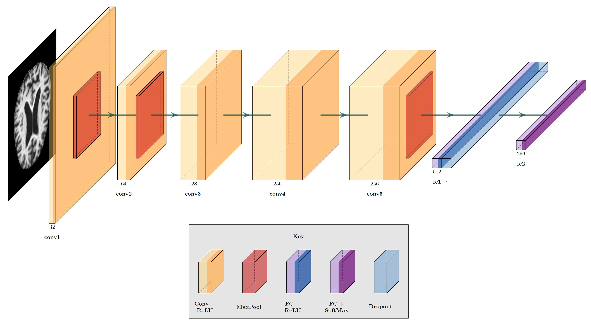

- Python
- Pandas
- NumPy
- SciPy
- PyTorch
- TensorFlow
- scikit-learn
- Plotly
- Streamlit
- Power BI
- R
- SQL
- SAS
- Adobe CC
I build end-to-end data pipelines, predictive models, and interactive dashboards spanning finance, neuroscience, and applied machine learning. My work integrates statistical modeling, ML, and visualization to turn complex data into actionable insights.
M.S. Data Science (Rutgers, GPA 3.97) • B.S. Neuroscience (Georgia Tech)
M.S. Data Science • GPA: 3.97/4.0 • 2025–Present
B.S. Neuroscience • Minor: Computing & Intelligence • 2019–2023
Clinical Data Management Intern
Mar 2026 – Present
- Automated multi-source Python pipelines to reconcile adverse events against concomitant medications and clinical procedures for a Phase II/III muscular dystrophy trial, integrated into a team-wide CDM dashboard with audit-ready Excel outputs deployed on AWS EC2 with Microsoft Entra ID authentication.
- Proposed a statistical analysis plan (SAP) per ICH E9, specifying MMRM as the primary analysis for repeated-measures endpoints and multiple imputation under MAR as a sensitivity analysis for intercurrent events.
- Used SAS Enterprise Guide and SQL to analyze immunogenicity vs. IP safety/efficacy using HLA typing and DSA data; built an interactive Python/Streamlit dashboard for trial-wide and patient-level exploration.
Data Analyst
June 2025 – Mar 2026
- Analyzed transaction-level sales data to identify revenue-driving products, peak demand times, and ingredient trends.
- Built ARIMA and XGBoost forecasting models to predict daily revenue and item demand (evaluated via MAE/RMSE).
- Developed an interactive Power BI dashboard for business insights and reporting.
Research Assistant
Aug 2023 – Jan 2025
- Built Python pipelines analyzing rodent auditory decision-making behavior using Drift Diffusion Modeling (DDM).
- Processed neural implant recordings; spike sorted units and developed SVM-based decoders to predict behavior.
- Conducted statistical inference and regression analyses; produced publication-ready figures and schematics.
Research Assistant
May 2021 – May 2023
- Performed qualitative content and frequency analyses on cultural trauma and political identity datasets.
- Mined online Russian press data; supported ML protocol development and data visualization.

May 2026
Watchwise AI — Movie Recommendation Platform
Streamlit app integrating the Gemini and TMDB APIs to generate personalized movie recommendations from natural-language queries and Letterboxd viewing history, with agentic multi-turn refinement and a self-correction loop to avoid duplicate suggestions. Live app →

Dec 2025
Dose–Response Curve Dashboard (1st Place, BMS Challenge)
Streamlit dashboard enabling pharmaceutical scientists to simulate 2/4/5PL and linear dose-response models. Includes curve saving, error-based dilution suggestions, and parameter comparison. Live app →

Dec 2025
Portfolio Optimization Dashboard
Built ML-driven portfolio optimizer (XGBoost, Random Forest, PCA, CatBoost). XGBoost outperformed SPY by 4.17% in September 2025. GitHub →

Oct 2022
CODA (2nd Place, Hack GT 9)
Computer-vision rhythm game teaching ASL using hand-tracking. Devpost →

May 2023
Alzheimer’s Assessment (CNN)
CNN-based severity classifier using oversampling, PCA, ResNet, AlexNet, PCANet.
Want to work together?
Let’s connect!
- > GitHub:
- github.com/mberns-ru
- > LinkedIn:
- linkedin.com/in/mpberns
- > Assistant:
- Ask_Me.exe ↑